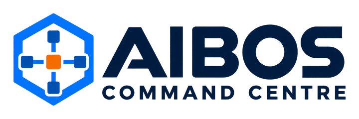

AI and automation · 2026
AIBOS Command Centre
A governed executive command centre in Obsidian, built with AI coding agents, that runs the business from one screen.
- Status
- Staged build in progress
- My role
- Architecture, governance rules, staged build plan, agent orchestration
Overview
AIBOS is an executive command centre for Gibcom built in Obsidian. It brings the business's operating information into one place and uses AI coding agents, working under written governance rules, to build and maintain it in stages.
The problem
Running an agency, a directory, a channel and a music project from scattered documents meant decisions were made without the full picture in view.
Approach
- Wrote the governance rules before any agent touched the vault: what may change, what needs approval, what is logged.
- Staged plan: each stage has a definition of done before the next begins.
- AI agents do the building; I do the deciding.
Tools
Outcomes and next measurement
AIBOS is not measured yet. Each build stage has its own validation gate; results will be reported stage by stage as they pass.
What I learned
Governance first. An agent with a clear rulebook is a colleague; without one it is a risk.